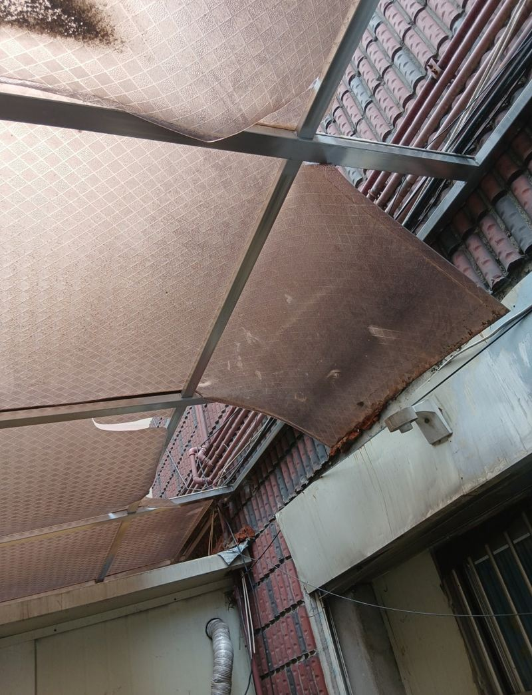
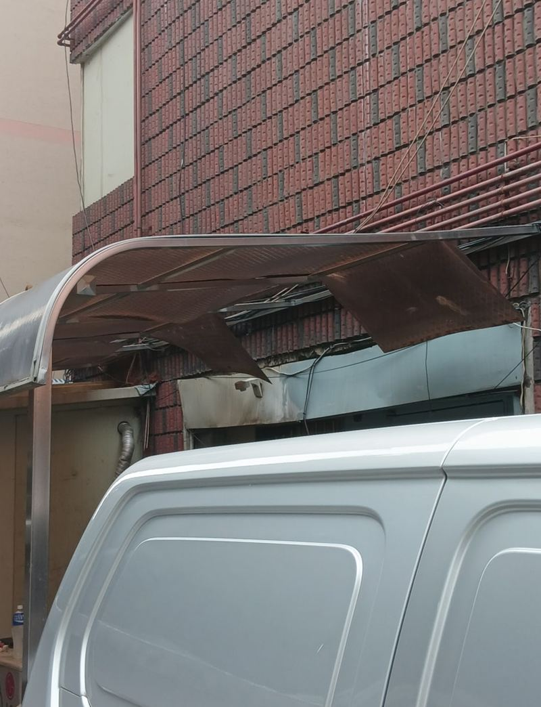
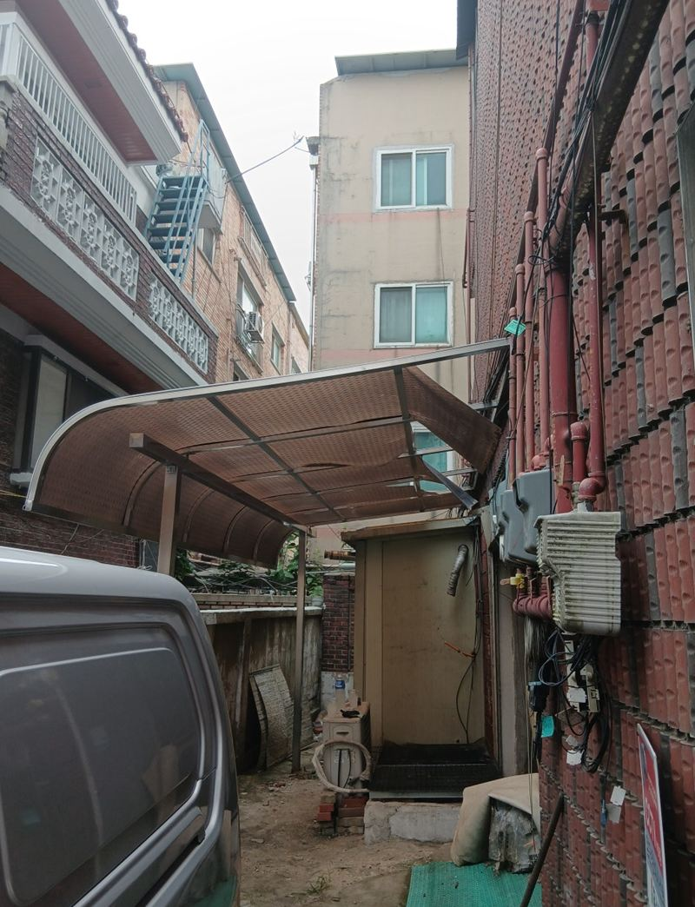
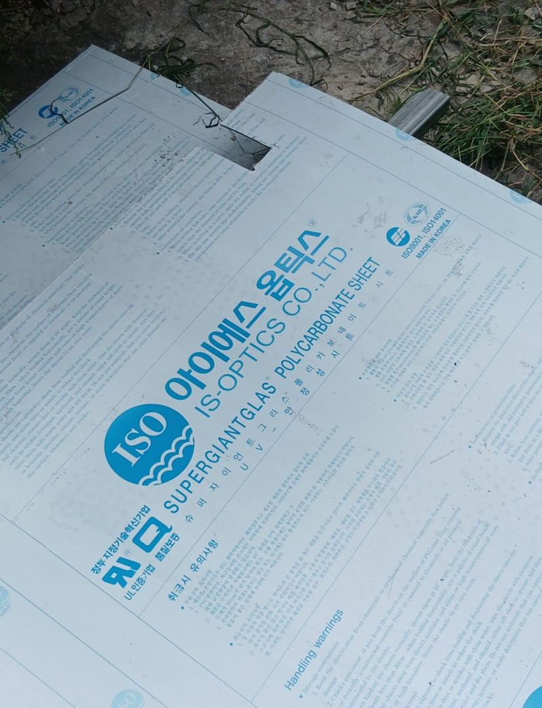
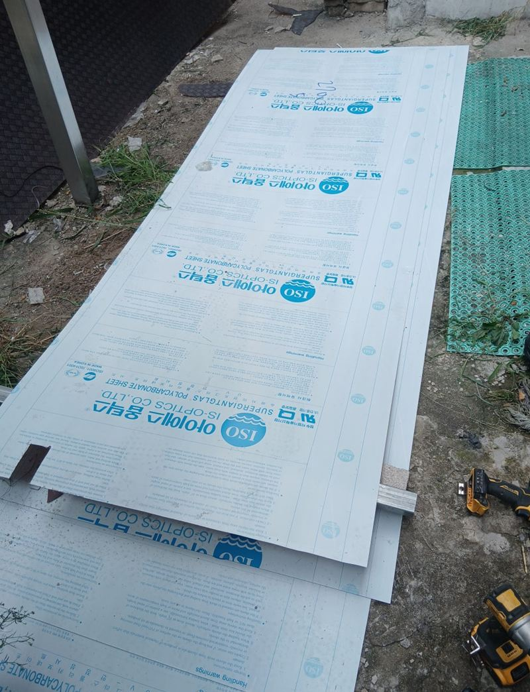
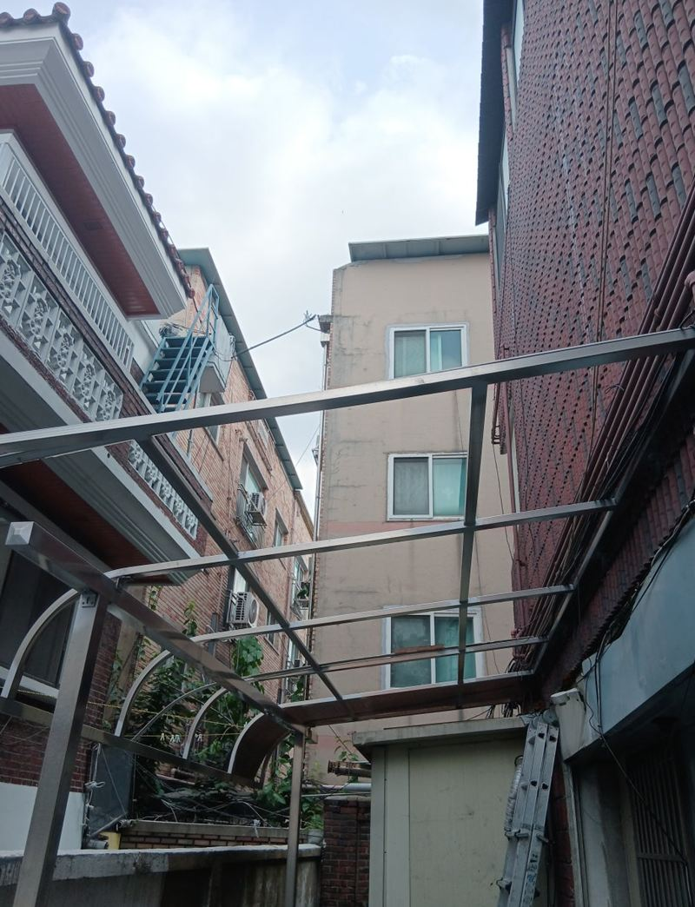
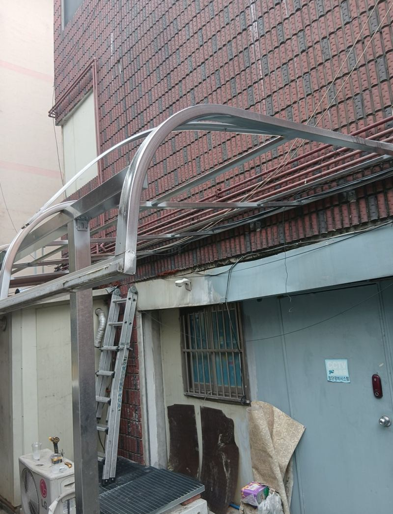
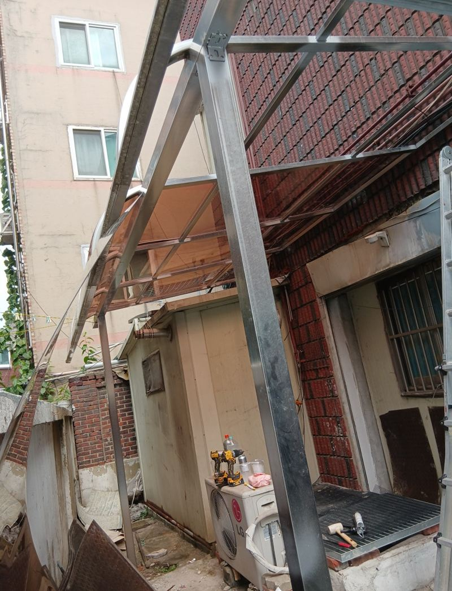
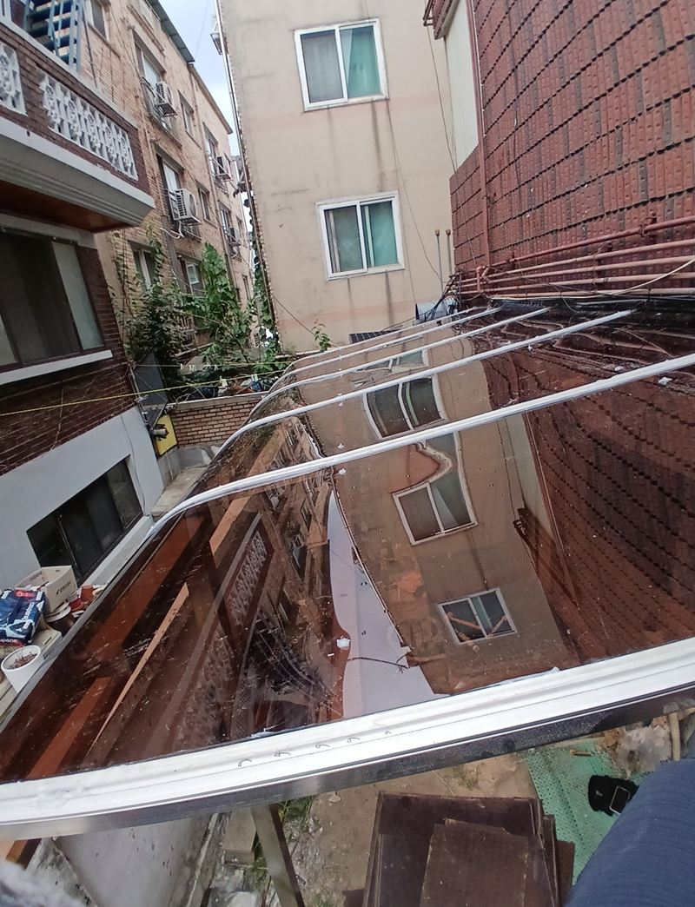

수원 부서진 렉산 교체 설치 비용

 교체 전교체 후
교체 전교체 후← 밀어서 전후 비교 →
위층에서 떨어진 물건이 1층 차양을 그대로 뚫고 지나간 집이었어요. 깨진 조각이 매달려 있어 지나갈 때마다 불안하고, 비가 오면 그 아래로 물이 쏟아졌어요. 고객님 요청은 하나였어요. "원래랑 똑같은 색으로, 빨리요."
색과 두께부터 맞췄어요
렉산은 투명, 브론즈, 청색, 불투명처럼 색이 다양하고 두께도 여러 가지예요. 일부만 바꾸는 경우 옆 판과 색이 다르면 바로 티가 나서, 남아 있는 판을 보고 같은 브론즈 계열로 정했어요. 채광을 얼마나 들일지, 햇볕을 얼마나 가릴지도 색 선택에 영향을 줘요.


철거에서 고정까지
-
보호 장비 갖추고 철거
깨진 렉산은 모서리가 칼처럼 날카로워요. 장갑과 보호 장비를 갖추고 사다리 위에서 조각을 떼어 낸 뒤, 남은 나사와 실리콘까지 긁어 냈어요. 이때 지붕 틀이 약해진 곳은 없는지도 같이 봤어요.

-
현장에서 정확히 재단
새 판은 틀 크기에 맞춰 현장에서 잘랐어요. 길이가 모자라면 틈이 생기고, 남으면 들떠서 바람에 덜컹거려요.


-
전용 나사 고정
일정한 간격으로 전용 스크류를 박아 판을 틀에 붙였어요. 나사를 너무 세게 조이면 판이 갈라질 수 있어서 힘을 조절해요.

비가 새지 않게 하는 마무리
렉산 공사에서 제일 중요한 건 방수예요. 나사가 박힌 자리와 판끼리 만나는 이음부는 물이 스며드는 길이라 실리콘으로 하나하나 막았어요. 마지막으로 물이 고이지 않고 한쪽으로 흘러내리는지 기울기를 확인하고, 떼어 낸 파편과 잔해는 모두 수거했어요.


렉산 교체 비용을 가르는 세 가지
| 항목 | 달라지는 이유 |
|---|---|
| 자재 | 색상과 두께에 따라 판 가격이 달라요. |
| 위치·면적 | 높은 곳이면 장비가 더 필요하고, 면적이 넓을수록 자재와 시간이 늘어요. |
| 부수 작업 | 틀 보강, 방수 범위, 철거 자재 처리가 더해질 수 있어요. |
렉산 교체가 필요한 신호
- 금 간 곳으로 비가 떨어져요작은 금도 비바람에 점점 커져요. 아래가 현관이나 주차 자리면 더 서둘러야 해요.
- 판이 누렇게 바래고 잘 부서져요햇볕에 오래 노출된 렉산은 약해져서 작은 충격에도 깨져요. 전체 교체를 검토할 때예요.
- 바람 불면 판이 덜컹거려요나사가 풀렸거나 판이 틀보다 짧은 경우예요. 고정만 다시 해도 되는지 봐요.
- 떨어진 물건에 맞아 구멍이 났어요이 현장처럼 파손 판만 같은 색으로 교체할 수 있어요.
렉산 교체 질문
한 장만 깨졌는데 전체를 바꿔야 하나요?
틀이 멀쩡하면 깨진 판만 바꿔요. 다만 오래된 판은 색이 바래 있어 새 판과 차이가 보일 수 있어요.
보험 처리에 필요한 사진도 남겨 주나요?
작업 전후 사진을 찍어 드릴 수 있어요. 필요하시면 미리 말씀해 주세요.
투명 대신 불투명으로 바꿔도 되나요?
가능해요. 햇볕을 얼마나 가리고 싶은지에 따라 색을 골라 드려요.
렉산과 유리, 차양으로 뭐가 나을까요?
렉산은 가볍고 깨져도 조각이 날카롭게 흩어지지 않아 주택 차양에 많이 써요. 유리는 투명도가 높지만 무겁고 틀 보강이 더 필요해요.
작업 중에 집 출입이 막히나요?
현관 위 차양이라면 철거하는 동안 잠깐 아래를 비워 주셔야 해요. 파편이 떨어질 수 있어서 안전하게 통제하고 작업해요.
렉산 수명은 어느 정도인가요?
햇볕을 받는 정도와 두께에 따라 달라요. 누렇게 바래고 손으로 눌렀을 때 바스러지면 교체를 생각하실 때예요.
빗물받이 쪽 렉산만 따로 바꿀 수 있나요?
판 단위로 바꾸는 거라 손상된 판만 골라 교체할 수 있어요. 사진으로 어느 판인지 표시해 주시면 돼요.
렉산 교체 후 관리는 어떻게 하나요?
부드러운 천과 물로 먼지를 닦아 주시면 돼요. 거친 수세미나 강한 세제는 표면을 긁어 더 빨리 뿌옇게 만들어요.
다른 렉산·우수관 현장
- 도봉 우수관 부식·녹 발생 시 교체해야 하는 이유 · 블로그
- 고양 외부 스텐 우수관 설치 비용 · 블로그
- 화성 빗물받이 렉산 교체 비용, 파손 범위별 차이 · 블로그
- 노원 렉산 부분 보수·보강 시공 비용 · 블로그
깨진 렉산 전체와 옆 판 색이 보이게 찍어서 보내 주세요.
전화 상담 010-4517-9872